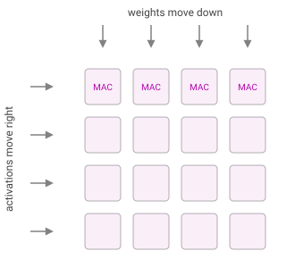

Hello, world: a shakedown of the machinery
Equations, code, a figure, and an interactive growth model — making sure everything on this site works before the real essays start.
Technical
This site will carry essays on how frontier AI systems get built — performance engineering on GPUs and TPUs, optimisers for large-batch training, RL and pretraining, the infrastructure underneath — plus occasional pieces on AI’s economics. Before any of that, this post exists to exercise every part of the machinery once.1 Delete it, or keep it as a colophon.
Equations
Inline math should sit comfortably in a sentence: the arithmetic intensity of a kernel is I = \mathrm{FLOPs} / \mathrm{bytes}, and a kernel is compute-bound when I exceeds the accelerator’s ridge point. Display math should breathe. For a matrix multiply A B with A \in \mathbb{R}^{m \times k}, B \in \mathbb{R}^{k \times n} in half precision (2 bytes per element):
I(m, n, k) \;=\; \frac{2\,mnk}{2\,(mk + kn + mn)} \;=\; \frac{mnk}{mk + kn + mn}.
For square matrices this grows like n/3 — which is why big matmuls are the easiest thing in the world to keep compute-bound, and small ones the hardest.
Code
Syntax highlighting, in the scaling book’s quiet GitHub style:
def arithmetic_intensity(m: int, n: int, k: int, bytes_per_el: int = 2) -> float:
"""FLOPs per byte moved for a naive (no-reuse-in-cache) m*k @ k*n matmul."""
flops = 2 * m * n * k
bytes_moved = bytes_per_el * (m * k + k * n + m * n)
return flops / bytes_moved
# A 4096^3 matmul in fp16 vs. an H100's ~295 FLOP/byte ridge point:
print(f"{arithmetic_intensity(4096, 4096, 4096):.0f} FLOPs/byte") # ~1365 -> compute-boundA figure
Images and captions:

An interactive model
The reason this site isn’t on Substack. A Solow-style growth model: capital per worker accumulates as
k_{t+1} = s\,k_t^{\alpha} + (1 - \delta)\,k_t, \qquad k^{*} = \left(\frac{s}{\delta}\right)^{\frac{1}{1-\alpha}},
with output k^\alpha, savings rate s, depreciation \delta, and \alpha = 1/3. Drag the sliders; the trajectory and the steady state k^{*} respond instantly.
Later, the same machinery carries anything: a roofline explorer, an attention visualiser, a takeoff model with more dials than anyone needs.
What this post just verified
Inline and display KaTeX; syntax-highlighted code with copy-on-hover; figures with captions; footnotes; category tags on the listing page; and client-side interactive cells with zero server behind them. If you can read this on sombagchi.com with a padlock in the address bar, the pipeline works end to end.
Footnotes
Footnotes need testing too.↩︎